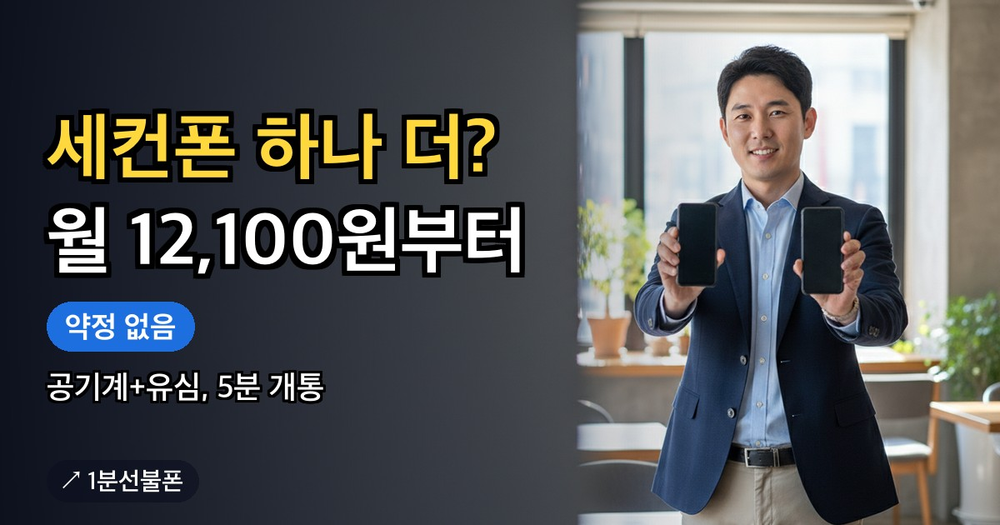

중고거래·구직·서비스 인증처럼 개인 번호와 분리해서 쓸 두 번째 번호가 필요하다면, 약정 없는 선불폰으로 세컨폰을 만드는 방법이 있습니다. 공기계에 유심만 준비하면 미납·연체 이력이 있어도 개통할 수 있고, 온라인 신청부터 개통까지 5분이면 끝납니다.
- 업무·거래·인증용 두 번째 번호는 약정 없는 선불폰으로 만드는 경우가 많습니다.
- 미납·연체·신용불량 이력이 있어도 개통할 수 있습니다.
- 공기계와 유심(6,600~8,800원)만 있으면 온라인 개통까지 5분입니다.
- 요금제는 12,100원부터 사용량에 맞게 고를 수 있습니다.
- 개통 후 해피콜을 받지 못하면 번호가 해지될 수 있으니 꼭 확인하세요.
업무용 번호가 따로 필요한 순간
중고거래 연락처를 개인 번호와 분리하고 싶거나, 구직 사이트나 배달·심부름 플랫폼에 올릴 번호를 따로 두고 싶을 때가 있습니다. 서비스 가입 시 문자 인증만 받을 번호가 필요하거나, 프리랜서·부업 명함에 적을 연락처를 따로 관리하고 싶은 경우도 마찬가지입니다.
이런 번호는 하루 종일 붙잡고 통화할 일이 많지 않고, 문자와 짧은 통화 위주로만 씁니다. 그래서 새 통신사에 약정으로 가입하기보다, 선불폰으로 두 번째 번호(세컨폰)를 만드는 방법을 많이 찾습니다. 필요한 동안만 충전해서 쓰면 됩니다.
세컨폰을 선불폰으로 만드는 이유
선불폰은 요금을 미리 충전해서 쓰는 방식이라 약정이 없습니다. 세컨폰처럼 사용 기간이 정해지지 않은 번호는 충전한 만큼만 쓰고, 필요한 동안만 충전해서 쓰면 되니 부담이 적습니다.
신용 조회도 하지 않기 때문에 미납·연체·신용불량 이력이 있어도 개통할 수 있습니다. 본번호 개통이 막혀 있던 분도 세컨폰 용도로는 선불폰을 선택하는 경우가 많습니다. 조건은 대한민국에 거주하고 있는 것 하나뿐입니다. 관련 상황은 미납 선불폰 개통과 신용불량 휴대폰 개통 글에서 더 자세히 다룹니다.
공기계와 유심, 두 가지만 준비하세요
세컨폰은 새 단말기를 사지 않아도 됩니다. 서랍에 있는 공기계에 통신망에 맞는 유심만 꽂으면 됩니다. 다만 공기계가 사용 가능한 상태인지, 어떤 통신망 유심을 지원하는지는 먼저 확인해야 합니다. 유심은 통신망별로 판매처와 색상, 상품명이 다르므로 편의점에서 헷갈리지 않도록 아래 표를 참고하세요.
| 통신망 | 상품명 | 구매처 |
|---|---|---|
| KT | 바로유심(민트색) | CU·GS25·이마트24 |
| LG U+ | 모두의원칩(검은색) | 이마트24·B마트·지하철 역 자판기 |
유심 가격은 6,600~8,800원입니다. 매장·상품에 따라 달라지므로 포장의 상품명과 색상을 확인하고 구매하세요. 구매 전 확인할 항목은 유심 준비 안내에 정리되어 있습니다.
유심만 있으면 5분 — 개통 절차
공기계와 유심을 준비했다면 온라인으로 진행합니다. 신청과 본인인증, 개통은 앤텔레콤 사이트에서 진행되며, 본인 명의 간편인증서가 있으면 유심이 준비된 상태에서 개통까지 5분이면 끝납니다. 세컨폰은 보통 새 번호로 신규가입해서 만듭니다.
진행 중에는 안면인증 절차를 거칩니다. 2026년 10월부터는 안면인증을 반드시 통과해야 개통할 수 있습니다. 통과율을 높이려면 두 가지를 기억하세요.
- 형광등 빛이 얼굴에 반사되지 않는 위치에서 진행하세요.
- 고개를 돌려야 할 때는 시선도 고개와 함께 움직여야 인식률이 높아집니다. 고개만 돌리고 눈으로 화면을 계속 보면 인식률이 떨어집니다.
절차와 전체 항목은 선불폰 개통 방법에서 순서대로 확인할 수 있습니다.
세컨폰 유지 비용, 얼마부터 시작할까
세컨폰은 문자 인증이나 짧은 통화 위주로만 쓰는 경우가 많아 요금제를 크게 잡을 필요가 없습니다. 선불 요금제는 월 12,100원부터 시작합니다. 더 넉넉한 요금제가 필요하면 상담으로 안내받을 수 있습니다. 요금제가 이 가격 하나만 있는 것은 아니고, 사용 목적에 맞춰 고를 수 있는 폭이 넓은 편입니다. 전체 요금제는 선불폰 요금제 전체 보기에서 데이터·통화량별로 비교할 수 있습니다.
인증 수신용으로만 번호를 쓴다면 최저가 요금제로 시작하고, 더 많이 쓰게 되면 상담으로 맞는 요금제를 확인하세요. 본인인증 목적에 맞춘 선택은 본인인증 가능한 선불폰 글을 참고하세요.
개통했다고 끝이 아닙니다 — 해피콜 확인
개통 신청을 마치면 본사에서 확인 전화(해피콜)가 옵니다. 이 전화를 반드시 받아야 하며, 받지 못하면 번호가 해지될 수 있습니다. 세컨폰은 평소 자주 확인하지 않는 번호인 경우가 많고, 모르는 번호는 잘 받지 않는 습관이 있는 분도 있습니다. 개통일 전후 며칠은 낯선 번호로 걸려오는 전화도 놓치지 않도록 신경 써야 합니다.
상황별로 다른 선불폰, 나에게 맞는 글은
세컨폰 외에도 상황에 따라 확인할 정보가 다릅니다. 미납·연체 이력이 걱정된다면 미납 선불폰과 신용불량 휴대폰 개통을, 비용을 가장 먼저 따진다면 가장 저렴한 선불폰을, 인증 용도가 우선이라면 본인인증 가능한 선불폰을 확인하세요. 온라인 진행이 어려워 방문이 필요하다면 가까운 곳은 센터 찾기와 지역별 센터 안내에서 찾을 수 있습니다.
자주 묻는 질문
세컨폰도 미납·연체 이력이 있으면 개통이 안 되나요?
아닙니다. 선불폰은 신용 조회 없이 충전해서 쓰는 방식이라 미납·연체·신용불량 이력이 있어도 개통할 수 있습니다.
세컨폰은 새 번호만 되나요, 쓰던 번호를 옮길 수도 있나요?
세컨폰은 보통 새 번호로 신규가입해서 만듭니다. 쓰던 번호를 그대로 옮기는 방법은 상담을 통해 안내받을 수 있습니다.
유심만 있으면 정말 5분 만에 끝나나요?
본인 명의 간편인증서와 호환 유심이 준비된 상태라면 온라인 신청부터 개통까지 5분 정도면 끝납니다. 유심이 없다면 먼저 구매하는 시간이 추가로 필요합니다.
안면인증이 잘 안 되는데 방법이 있나요?
형광등 빛이 얼굴에 반사되지 않는 곳에서 진행하고, 고개를 돌릴 때 시선도 함께 움직이면 인식률이 올라갑니다. 2026년 10월부터는 이 인증을 반드시 통과해야 개통할 수 있습니다.
개통 후에 별다른 연락이 없으면 그냥 써도 되나요?
아닙니다. 개통 후 오는 확인 전화(해피콜)를 반드시 받아야 하며, 받지 못하면 번호가 해지될 수 있습니다. 세컨폰이라도 개통일 전후에는 낯선 번호의 전화를 확인해야 합니다.